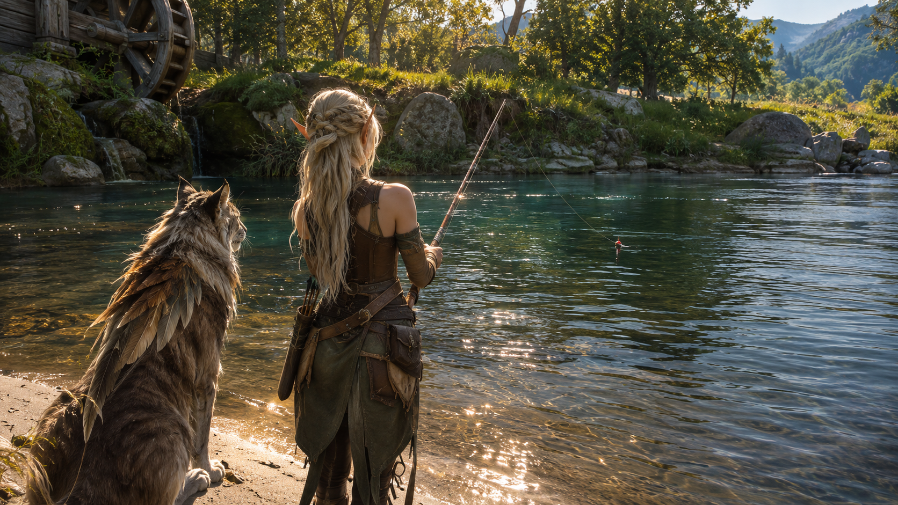

A Giant in Riverglades
Sylthara and I began another day in Riverglades, where the wilderness continues to test everything I have learned since descending from my island home.
It was a day of mixed fortunes. My adventures around Eastsea and Windstead brought their share of defeats, but also enough experience to see me reach my forty-fourth season. With further training in marksmanship, traps, and tending to Sylthara's wounds, I felt better prepared for the challenges ahead.
Then came Gul’gash.
I joined Slopper Plopper, Caster Sy, and Seda Lruk in an effort to bring down the enormous giant. Our first attempt ended in failure, as did our second. This creature demanded considerably more than courage and a handful of arrows.
Between attempts, we discussed slowing him with magic, using crippling poison, and whether we could provide sufficient healing to keep someone standing against him.
The possibility of having Sylthara bear the brunt of his attacks was raised.
“If I send the cat in she will get flattened,” I remarked.
My beautiful companion is formidable, but I have no desire to sacrifice her needlessly. She has been beside me since the earliest days of my adventures, and her life means considerably more to me than the reward for slaying a giant.
With renewed assistance, we made another attempt. At last, sometime around the middle of the afternoon, Gul’gash fell.
There is something particularly satisfying about overcoming an enemy who has already defeated you. Persistence, cooperation, and a willingness to learn from our mistakes had accomplished what strength alone could not.
The Quiet River
My duties were not yet finished. Further adventures took me through Powderfuse Port, Bolder’ok, and Terral’s Watch. My journeys also carried me to Tanaris and Booty Bay before I eventually returned to more familiar surroundings.
Near Farholde Keep, I decided that Sylthara and I had earned a little peace.
I found a place beside the river, put aside my weapon, and took out my fishing pole. Sylthara settled nearby as the water flowed gently past us.
Born among the clouds, I never imagined that I would find such comfort beside a river. There is a beauty to this world beneath the skies that I am only beginning to appreciate.
For a while, there were no giants, no enemies to track, and no urgent requests for assistance. There was simply the river, my faithful companion, and me.
I should make time for such things more often.
Voices of the Lion’s Pride
By evening, Sylthara and I had returned to Goldshire and the welcoming warmth of the Lion’s Pride Inn.
I spent some time listening to the other patrons. Dougal Flintshot, Laeric Macbryde, and Celora Aurumdal were discussing matters concerning Lordaeron, a kingdom whose troubled history continues to fascinate me.
As one born far above these lands, I find that listening to ordinary people often teaches me more about the world than any book.
Elsewhere in the inn, Surene Caledon, Rascal Lowburne, and Sydney Talash became involved in an amusing discussion concerning language and the difficulties of understanding one another.
Eventually, someone declared:
“USE NORMAL WORDS!”
I could scarcely suppress a smile. Considering the difficulties humans have pronouncing my own true surname, Ser’jaen’thal, perhaps I understood their frustration better than they realized.
I was content to listen and enjoy their company without needing to become the center of their conversations.
When the evening grew late, I made my way upstairs with Sylthara. The familiar sounds of conversation drifted up from the common room below.
This morning, I had faced an enemy seemingly impossible to defeat. This afternoon, I had enjoyed the simple pleasure of fishing. Tonight, I rested beneath the roof of an inn among people whose world was once entirely foreign to me.
Goldshire is becoming more than a place to rest between adventures.
It is becoming home.
— Aelindra Sarjeant